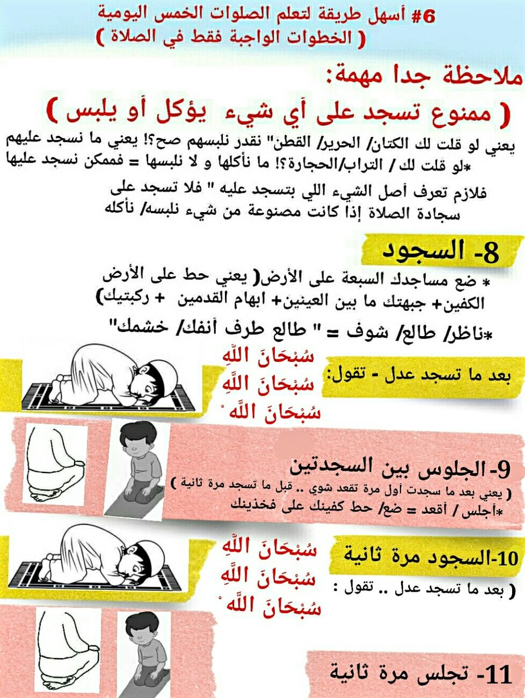

| الرئيسيه | الشهاده | الصلاه | الزكاه | الصوم | الحج |
للصّلاة منزلة عظيمة عند المسلمين؛ فهي أهمُّ وأرفع دعائم الإسلام الأساسيّة، وهي ثاني أركان الإسلام الخمس التي حثَّ النبيّ -صلّى الله عليه وسلّم- على التَّمسك بها، وعدم التقصير في أدائها، وتطبيقها على أكمل وجه، كما تُعدّ الصّلاة ارتباطاً بين العبد وخالقه، فإذا ما أراد عبدٌ سؤال خالقه أمراً أهمَّه، بادر إلى الصّلاة يُناجيه ويدعوه ويتضرَّع إليه أن يُلبّي له مطلبه. وقد كان من أهميّة الصّلاة أنَّ فرضيّتها على المسلمين لم تكن كسائر العبادات بل إنّ المولى -عزَّ وجلّ- حين فرض الصّلاة، استدعى نبيّه محمّداً صلّى الله عليه وسلّم، ففرضها عليه وعلى أمّته في السماء السابعة،[١] فما معنى الصّلاة لُغةً، وما معناها اصطلاحاً، وما هي الكيفيّة التي تتمّ الصّلاة بها؟ هذا ما ستُجيب عنه المقالة بعد توفيق الله.
